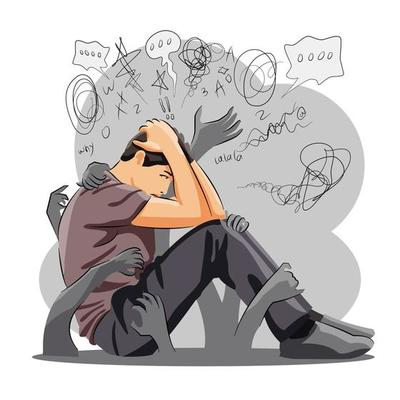
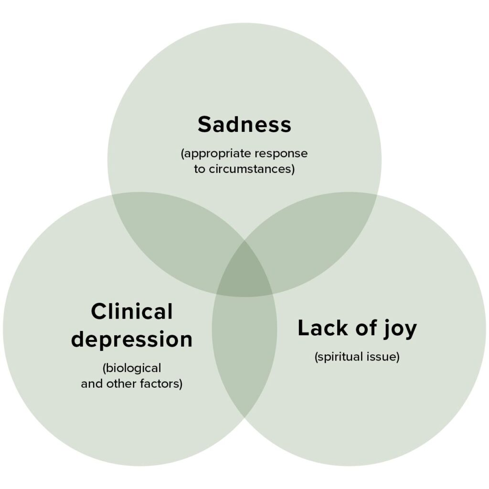

What is Depression?
Depression is a common and serious medical illness that negatively affects how you feel, the way you think and how you act. Fortunately, it is also treatable. Depression causes feelings of sadness and/or a loss of interest in activities you once enjoyed. It can lead to a variety of emotional and physical problems and can decrease a person’s ability to function at work and at home.
Types of Depression
There are several types of depression. Some common ones include:
- Major Depressive Disorder: Characterized by persistent sadness, loss of interest, or pleasure in daily activities.
- Persistent Depressive Disorder (Dysthymia): A long-term form of depression, typically with less severe symptoms than major depression.
- Bipolar Disorder: Involves episodes of both depression and mania (periods of unusually elevated mood, energy, and activity).
- Seasonal Affective Disorder (SAD): Depression that occurs during specific seasons, usually winter.
- Perinatal Depression: Depression that occurs during pregnancy or after childbirth.

Causes of Depression
Depression can be caused by a combination of factors, including:
- Biological Factors: Differences in brain chemistry and hormone levels.
- Genetic Predisposition: A family history of depression can increase the risk.
- Environmental Factors: Stressful life events, trauma, and lack of social support.
- Psychological Factors: Negative thinking patterns, low self-esteem.

Effects of Depression
Depression can have significant effects on various aspects of life:
- Emotional Effects: Sadness, hopelessness, irritability, anxiety.
- Behavioral Effects: Loss of interest in activities, social withdrawal, fatigue, changes in appetite or sleep.
- Cognitive Effects: Difficulty concentrating, indecisiveness, negative thoughts.
- Physical Effects: Headaches, stomach problems, unexplained aches and pains.
- Social Effects: Strained relationships, isolation.

Why Depression Happens in Students Mainly
College students are particularly vulnerable to depression due to a unique set of stressors:
- Academic Pressure: High expectations, exams, assignments.
- Social Isolation: Adjusting to a new environment, being away from familiar support systems.
- Financial Stress: Worries about tuition, living expenses.
- Sleep Deprivation: Irregular sleep schedules, late-night studying.
- Relationship Issues: Navigating new or changing relationships.
- Uncertainty about the Future: Concerns about career paths and life after graduation.
Understanding Student Depression (Video)
Symptoms of Depression
Symptoms of depression can vary from person to person, but some common signs include:
- Persistent sadness, emptiness, or hopelessness.
- Loss of interest or pleasure in most or all activities.
- Significant weight loss or gain, or a decrease or increase in appetite.
- Insomnia or hypersomnia (excessive sleeping).
- Fatigue or loss of energy nearly every day.
- Feelings of worthlessness or excessive or inappropriate guilt.
- Difficulty thinking, concentrating, or making decisions.
- Recurrent thoughts of death or suicide, or suicide attempts.
If you are experiencing several of these symptoms, please seek help from a mental health professional.

How to Address Depression (Seeking Help)
Depression is treatable. If you think you might be depressed, it's important to reach out for help. Effective treatments include:
- Therapy (Psychotherapy): Talking to a therapist can help you understand and manage your depression. Cognitive Behavioral Therapy (CBT) and Interpersonal Therapy (IPT) are common types.
- Medication: Antidepressant medications can help regulate brain chemistry. These are usually prescribed and monitored by a doctor or psychiatrist.
- Lifestyle Changes: Regular exercise, a healthy diet, and sufficient sleep can also play a supportive role in recovery.
Campus Counseling Services are available to help. Please don't hesitate to reach out.
Treatment Options for Depression (Video)
Preventive Measures
While not always preventable, you can take steps to promote good mental health and potentially reduce the risk of depression:
- Build Strong Social Connections: Maintain relationships with friends and family.
- Practice Stress Management: Learn healthy coping mechanisms for stress, such as exercise, mindfulness, or hobbies.
- Maintain a Healthy Lifestyle: Eat nutritious foods, get regular exercise, and prioritize sleep.
- Set Realistic Goals: Avoid overcommitting yourself and set achievable goals.
- Seek Help Early: Don't wait until things feel overwhelming to reach out for support.
- Practice Self-Care: Engage in activities you enjoy and that help you relax.